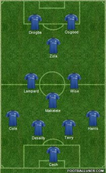

- History
- Stadium
- Emblem and Uniform
- Supporters
- Winning Record
- Record
Winning Record
- Chelsea's highest player was Ron Harris, who played 795 games from 1961 to 1980.
- Frank Lampard also scored the most goals for Chelsea (211 goals in 648 games, 2001-2014).
- He scored the most runs (15 goals) in the league,
the most clean sheets (25 matches),
and the consecutive clean sheets (10 matches) in the 2004-05 season and six consecutive clean sheets in the 2005-06 season.
Club Legends
- Petr Cech-GK(1).
- Ron Harris-RB
- John Terry-CB(26)
- Marcel Desailly-CB(6)
- Ashely Cole-LB(3)
- Claude Makélélé-DM(4)
- Dennis Wise-CM(11)
- Frank Lampard-CAM(8)
- Gianfranco Zola-CF(25)
- Peter Osgood-ST
- Didier Drogba-ST(11)
- jose Mourinho-Manager
